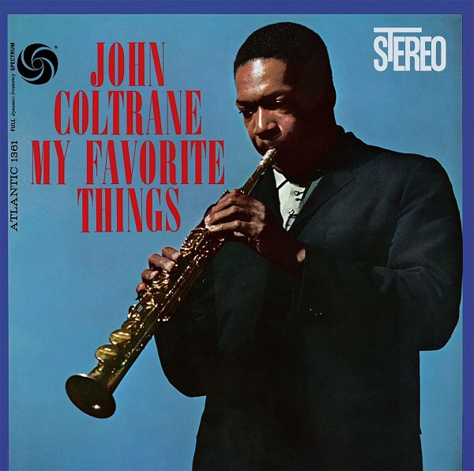

SACD
My Favorite Things
John Coltrane
Media: NM · Sleeve: G+
—
Personal
Discogs SuggestedCA$279.08
Discogs MedianCA$279.08
Discogs HighCA$279.08
- Physical Copy ID
- BB-SACD-048
- Year
- 2014
- Label
- ORG Music, Atlantic
- Catalog #
- ORGM-1080, SD-1361
- Country
- USUS
- Genre / Style
- Jazz · Hard Bop, Modal
stock